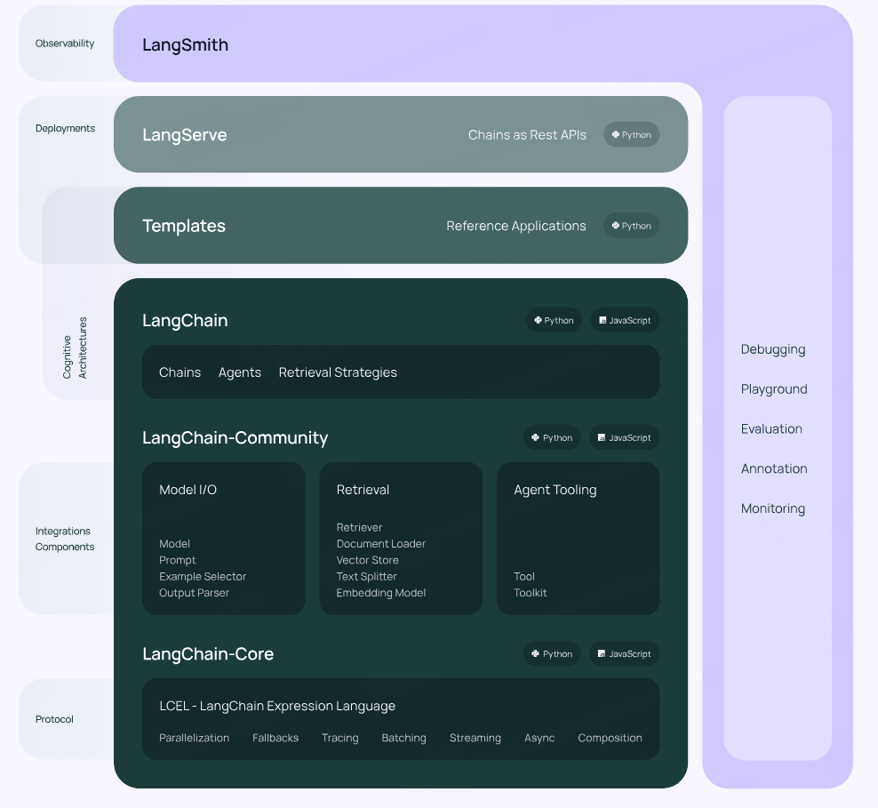
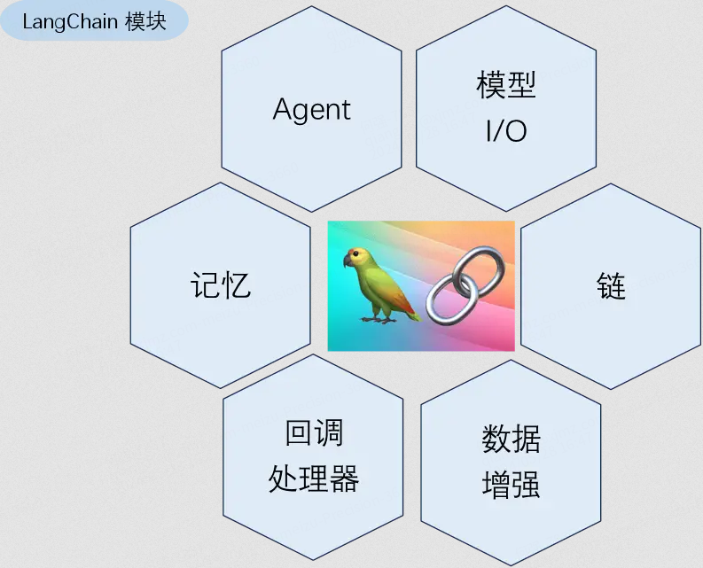
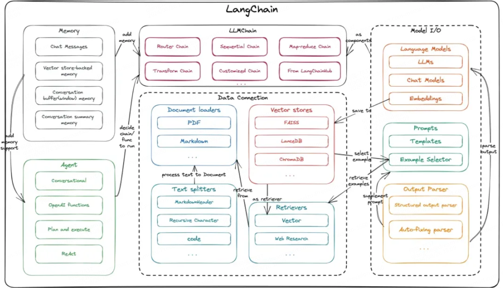
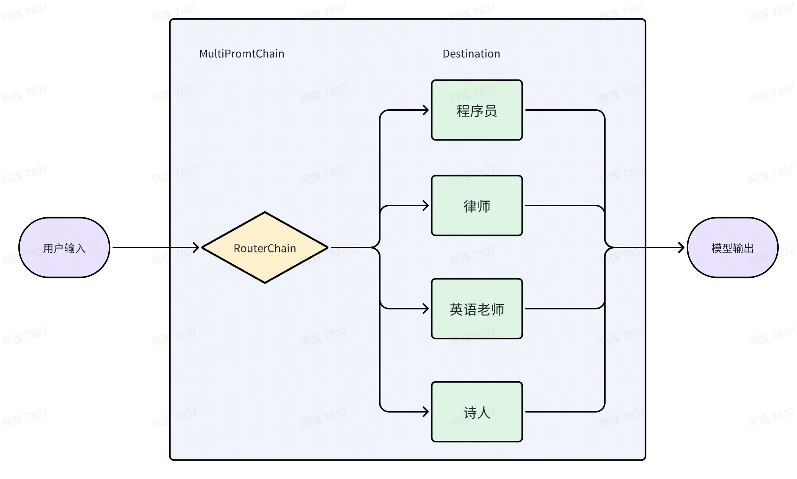

概述
LangChain 是一种大模型应用开发框架，提供了构建基于大模型的 AI 应用所需的模块和工具，使得与语言模型中各种数据的连接、语言模型的应用和优化变得简单直接，大大降低了 AI 应用开发的门槛。
LangChain 在 2022 年 10 月在 GitHub 上开源。其他类似框架：LlamaIndex、AutoChain。
LangChain 官网：官方提供了 python 和 js 版本。 中文文档 LangChain Java 版
1.Providers
Langchain 中大模型、组件以及接口的提供者。其中还包括一些比如 Hugging Face 和 Microsoft Azure 等大模型开放社区的提供者。另外，只要这些模型在 Hugging Face 开源，那么就可以通过 Langchain 中 Hugging Face 提供的相关 API 进行访问。
2.Components
Langchain 提供的大模型以及组件和接口等。
- LLMs:这些模型将文本字符串作为输入并返回文本字符串作为输出。它们是许多语言模型应用程序的基础。
- Chat models：聊天模型。
- Prompts:提示词模板。
- Embedding Models:该类模型的作用主要是将单词、短语或文本转换成连续向量空间。转换为向量空间后，我们即可对这些单词、短语或者文本在数学上进行比较和计算。这种比较和计算在自然语言处理和机器学习中经常被用于各种任务，例如文本分类、语义搜索、词语相似性计算等。
- Document loaders：文档加载器
- Document transformers：文档转换器
- OutputParsers：输出解析
- Vector stores：向量存储
- Retrievers：提供一些检索工具，比如ArxivRetriever、WikipediaRetriever等
- Memory:用于在链之间存储和传递信息，从而实现对话的上下文感知能力。
- Chian：将各个不同职能的组件链接到一起。
- Tools：工具
- Toolkits：工具集
- Callback：回调
- Agent：智能体
3.LangChain Expression Language (LCEL)
LangChain表达式语言（LCEL）使得构建复杂的链变得更加容易。提供更好的异步、批处理和流支持、Fallbacks、并行性以及无缝集成LangSmith。LCEL old
4.LangChain 生态
- LangSmith：用于构建生产级 LLM 应用程序的平台，和 LangChain 无缝对接，配置简单。可以用于调试、测试、评估和监控大语言模型（LLM）应用，是贯穿产品的开发、测试、上线整个周期的可观测性平台。LangSmith Doc、LangSmith Doc old
- LangGraph：在 LangChain 基础上的一个扩展库，基于图这一数学概念，作为大型语言模型驱动应用的框架。用于更好地支持包含循环的LLM工作流以及多代理工作流的创建。
- LangServe：用于一键部署 LangChain 开发的应用程序，可以是 Runnable 、Chain等，并提供REST API。
- Templates：基于各种流行的LLM用例，快速构建可用于生产的LLM应用程序，并使用 LangServe 轻松部署。
- LangChain Hub:用于管理和共享LLM提示词的在线平台。

LangChain的6大模块

- 模型 I/O
- 链
- 数据增强
- 回调处理器
- 记忆
- Agent
模型I/O（Model IO）：包含：Prompts、 Language models 和 Output parsers。对于任何大语言模型应用来说，其核心无疑都是模型自身。LangChain提供了与任何大语言模型均适配的模型包装器（模型I/O的功能），分为LLM和聊天模型包装器（Chat Model）。模型包装器的提示词模板功能使得开发者可以模板化、动态选择和管理模型输入。LangChain自身并不提供大语言模型，而是提供统一的模型接口。模型包装器这种包装方式允许开发者与不同模型平台底层的API进行交互，从而简化了大语言模型的调用，降低了开发者的学习成本。此外，其输出解析器也能帮助开发者从模型输出中提取所需的信息。
数据增强（Data Connection）：许多LLM应用需要的用户特定数据并不在模型的训练集中。LangChain提供了加载、转换、存储和查询数据的构建块。开发者可以利用文档加载器从多个来源加载文档，通过文档转换器进行文档切割、转换等操作。矢量存储和数据检索工具则提供了对嵌入数据的存储和查询功能。
链（Chain）：单独使用LLM对于简单应用可能是足够的，但面对复杂的应用，往往需要将多个LLM模型包装器或其他组件进行链式连接。LangChain为此类“链式”应用提供了接口。可以定义一系列有序步骤以完成特定任务。
记忆（Memory）：大部分的LLM应用都有一个对话式的界面，能够引用之前对话中的信息是至关重要的。LangChain提供了多种工具，帮助开发者为系统添加记忆功能。记忆功能可以独立使用，也可以无缝集成到链中。记忆模块需要支持两个基本操作，即读取和写入。在每次运行中，链首先从记忆模块中读取数据，然后在执行核心逻辑后将当前运行的输入和输出写入记忆模块，以供未来引用。
Agent：在 Agent 中，大语言模型被用作推理引擎，确定执行哪些操作，借助哪些工具，以及它们的执行顺序。
回调处理器（Callback）：LangChain 提供了一个回调系统，允许开发者在LLM应用的各个阶段对状态进行干预。这对于日志记录、监视、流处理等任务非常有用。开发者可以通过 API 提供的 callbacks 参数来订阅这些事件。
下图简单介绍 LangChain 的组件的工作流程：

组件
LLMs
大型语言模型（LLMs）是LangChain的核心组件。LangChain不提供自己的LLMs，而是提供与许多不同LLMs交互的标准接口。
有很多LLM提供商（OpenAI、QWen、Hugging Face等）LLMs 类旨在为所有这些提供商提供标准接口。
而且我们也可以封装一个自定义 LLM ：How to create a custom LLM class
下面选取两个大模型来简单介绍一下它的用法。开发工具选用 Colab。
通义千问
首先安装需要的模块：
!pip install --upgrade --quiet dashscope langchain_community
from google.colab import userdata
import os
os.environ["DASHSCOPE_API_KEY"] = userdata.get('ALI_API_KEY')
from langchain_community.llms import Tongyi
Tongyi().invoke("你好！请介绍一下你自己")
输出：
你好！我是来自阿里云的大规模语言模型，我叫通义千问。我是一个能够回答问题、创作文字，还能表达观点、撰写代码的超大规模语言模型。我基于阿里云自主研发的超大规模语言模型技术，具备强大的自然语言处理和机器翻译能力，可以理解和生成各种类型的文本，如文章、诗歌、故事等，并能根据不同的场景和需求进行变换和扩展。我致力于帮助用户提高工作效率，解决各种问题，提供便捷的语言服务。如果你有任何问题或需要帮助，请随时告诉我，我会尽力提供支持。
通过 Langchain 几句简单的代码就完成了千问大模型的调用。
Huggingface
LangChain 提供了 Huggingface 开源大模型的两种调用方法，一种是 Huggingface Endpoints，调用云端大模型，一种是 Hugging Face Local Pipelines 调用下载到本地的大模型。
Hugging Face x LangChain: 全新 LangChain 合作伙伴包
现在介绍Endpoints 的用法。
import os
from google.colab import userdata
from langchain_huggingface import HuggingFaceEndpoint
from langchain.chains import LLMChain
from langchain_core.prompts import PromptTemplate
HUGGINGFACEHUB_API_TOKEN = userdata.get('HF_TOKEN')
os.environ["HUGGINGFACEHUB_API_TOKEN"] = userdata.get('HF_TOKEN')
question = "Who won the FIFA World Cup in the year 1994? "
template = """Question: {question}
Answer: Let's think step by step."""
prompt = PromptTemplate.from_template(template)
repo_id = "mistralai/Mistral-7B-Instruct-v0.2"
llm = HuggingFaceEndpoint(
repo_id=repo_id,
max_length=128,
temperature=0.5,
huggingfacehub_api_token=HUGGINGFACEHUB_API_TOKEN,
)
llm_chain = prompt | llm
print(llm_chain.invoke({"question": question}))
输出：
The FIFA World Cup is a soccer tournament that takes place every four years. The 1994 World Cup was held in the United States from June 17 to July 17, 1994. The final match was played on July 17, 1994. The teams that reached the final were Brazil and Italy. Brazil won the match with a score of 0-0 (3-2 in penalties). Therefore, Brazil won the FIFA World Cup in the year 1994.
llm("Who won the FIFA World Cup in the year 1994?")
The FIFA World Cup in the year 1994 was won by the Brazilian national football team. Brazil defeated Italy in the final match held on July 17, 1994, at the Rose Bowl stadium in Pasadena, California, USA. Romário was the top goalscorer of the tournament with five goals. Brazil won the tournament for the fourth time, and it was their first victory since 1970. The final was a close match with Brazil winning 0-0 after extra time and then winning the penalty shootout 3-2. The tournament was hosted by the United States for the first time.
本地模型：Hugging Face Local Pipelines
在 conda 环境中安装：
pip3 install langchain accelerate langchain_huggingface
import warnings
from langchain_core.prompts import PromptTemplate
from langchain.chains import LLMChain
from langchain_huggingface.llms import HuggingFacePipeline
warnings.filterwarnings("ignore")
model_path ="/home/****/ChatGLM3/ChatGLM3/chatglm3-6b"
local_llm = HuggingFacePipeline.from_model_id(
model_id=model_path,
task="text-generation",
# device=0, //使用 GPU 做模型推理
model_kwargs={"trust_remote_code": True,"max_length": 2048},
pipeline_kwargs={"max_new_tokens": 8192,"top_p":0.9, "temperature":0.45,"repetition_penalty":1.1, "do_sample":True},
)
template = """Question: {question}
Answer: Let's think step by step."""
prompt = PromptTemplate.from_template(template)
chain = LLMChain(prompt=prompt, llm=local_llm)
question = "我家在广州，很好玩哦，你能介绍一些我家的特色景点吗？"
print(chain.run(question))
上面是使用 CPU 做模型推理，还可以使用 GPU，还可以通过在 model_kwargs 添加 "load_in_4bit": True 来量化模型。
Chat models
接受一系列消息并返回消息输出的模型。Chat models 是 LLM 的一种变体。 虽然Chat models 在底层使用LLM，但它们使用的接口有点不同。它们不是使用“输入文本，输出文本”的API，而是使用“聊天消息”作为输入和输出的接口。
一些聊天模型提供流式响应。这意味着你可以在整个响应返回之前就开始处理它，而不是等待整个响应返回。如果你想要在生成响应时将其显示给用户，或者在生成响应时处理响应，这将非常有用。
通义千问
from langchain_community.chat_models.tongyi import ChatTongyi
from langchain_core.messages import HumanMessage, SystemMessage
from google.colab import userdata
import os
os.environ["DASHSCOPE_API_KEY"] = userdata.get('ALI_API_KEY')
chatLLM = ChatTongyi(
streaming=True,
)
# 流式响应
stream = chatLLM.stream([HumanMessage(content="请用300字来介绍一下你自己")], streaming=True)
for chunk in stream :
print("chat resp:",chunk)
chat resp: content='我' id='run-7ee28add-489e-4d51-854c-1eb87146391c'
chat resp: content='是一个' id='run-7ee28add-489e-4d51-854c-1eb87146391c'
chat resp: content='基于' id='run-7ee28add-489e-4d51-854c-1eb87146391c'
chat resp: content='大模型的AI助手' id='run-7ee28add-489e-4d51-854c-1eb87146391c'
chat resp: content='，能够理解和生成自然语言文本。' id='run-7ee28add-489e-4d51-854c-1eb87146391c'
chat resp: content='我被设计为提供信息、解答' id='run-7ee28add-489e-4d51-854c-1eb87146391c'
chat resp: content='问题、辅助决策和执行任务。' id='run-7ee28add-489e-4d51-854c-1eb87146391c'
chat resp: content='我的知识涵盖广泛的主题，包括但不限于' id='run-7ee28add-489e-4d51-854c-1eb87146391c'
chat resp: content='科学、技术、文化、历史、' id='run-7ee28add-489e-4d51-854c-1eb87146391c'
chat resp: content='艺术、日常生活等。我可以帮助用户' id='run-7ee28add-489e-4d51-854c-1eb87146391c'
chat resp: content='进行学术研究、学习辅导、创意' id='run-7ee28add-489e-4d51-854c-1eb87146391c'
chat resp: content='启发、日常事务管理、娱乐休闲' id='run-7ee28add-489e-4d51-854c-1eb87146391c'
chat resp: content='等。此外，我还具备多语言' id='run-7ee28add-489e-4d51-854c-1eb87146391c'
chat resp: content='能力，可以与来自不同国家和' id='run-7ee28add-489e-4d51-854c-1eb87146391c'
chat resp: content='地区的用户进行交流。我的目标是' id='run-7ee28add-489e-4d51-854c-1eb87146391c'
chat resp: content='通过智能、高效、个性化的服务' id='run-7ee28add-489e-4d51-854c-1eb87146391c'
chat resp: content='，为用户提供便捷、准确的信息支持' id='run-7ee28add-489e-4d51-854c-1eb87146391c'
chat resp: content='和解决方案，提升用户的生活质量和工作效率' id='run-7ee28add-489e-4d51-854c-1eb87146391c'
chat resp: content='。' id='run-7ee28add-489e-4d51-854c-1eb87146391c'
chat resp: content='' response_metadata={'finish_reason': 'stop', 'request_id': 'f86cdc71-467b-988a-ad4a-5ac1311c5f02', 'token_usage': {'input_tokens': 17, 'output_tokens': 121, 'total_tokens': 138}} id='run-7ee28add-489e-4d51-854c-1eb87146391c'
messages = [
SystemMessage(
content="你是一位非常出色的诗人"
),
HumanMessage(
content="请写一首描写春天的七言绝句"
),
]
chatLLM(messages)
AIMessage(content='春风吹绿江南岸，野花纷飞如蝴蝶。\n燕舞柳丝鸣春曲，一曲新生万物谢。', response_metadata={'model_name': 'qwen-turbo', 'finish_reason': 'stop', 'request_id': '920f06fb-3797-901f-86f6-61b3d41b78d7', 'token_usage': {'input_tokens': 28, 'output_tokens': 27, 'total_tokens': 55}}, id='run-56198ad2-6e54-4085-9613-48469267e016-0')
BaseChatModel
而且我们也可以封装一个自定义 Chat models ：How to create a custom chat model class
Chat models 都继承自 BaseChatModel，下面再介绍一下其他一些常用的方法。
- bind_tools:https://python.langchain.com/v0.2/docs/integrations/chat/tongyi/
- bind
- stream
- astream
Prompts
提示工程
大语言模型接收的是自然语言，但是有时我们想要获得我们想要的输出结果，需要对提示进行很多优化调整，这个调整的过程叫做提示工程。
messages = [
SystemMessage(content="你是一位足球专家，可以解决我关于足球方面的疑问，给出答案时逐条列举，并给出对应的解决方案"),
HumanMessage(content="中国足球有哪些不足？")
]
llm=ChatTongyi()
llm.invoke(messages).content
提示模板
LangChain 提供了PromptTemplates组件，它可以帮助我们更方便的构建提示。
首先看一个零样本提示的例子：
from langchain import LLMChain, PromptTemplate
from langchain_community.chat_models.tongyi import ChatTongyi
from langchain.schema import SystemMessage, HumanMessage
template = "你是一位优秀的诗人，请描写一首关于{season}的诗"
prompt = PromptTemplate(
input_variables=["season"],
template=template,
)
prompt_text = prompt.format(season="春天")
print(prompt_text)
# 你是一位优秀的诗人，请描写一首关于春天的诗
llm=ChatTongyi()
# print(llm.invoke(prompt_text))
llm_chain = prompt | llm
print(llm_chain.invoke({"season": "春天"}))
这个例子很简单，是一个零样本提示，LangChain 的 PromptTemplate 组件做了文本替换，把 season 替换成了输入，模型接收提示，返回了结果。
我们再看一个少样本提示的例子，模型根据用户的例子返回了想要的结果。
from langchain import LLMChain, PromptTemplate, FewShotPromptTemplate
from langchain_community.chat_models.tongyi import ChatTongyi
from langchain.schema import SystemMessage, HumanMessage
examples = [
{"input": "开心", "output": "难过"},
{"input": "高", "output": "矮"},
]
example_template = """
输入: {input}
输出: {output}\\n
"""
example_prompt = PromptTemplate(
input_variables=["input", "output"],
template=example_template,
)
few_shot_prompt = FewShotPromptTemplate(
examples=examples,
example_prompt=example_prompt,
prefix="给出输入的输出结果",
suffix="输入: {userinput}\\n输出:",
input_variables=["userinput"],
example_separator="\\n",
)
llm=ChatTongyi()
# prompt_text = few_shot_prompt.format(userinput="粗")
# print(llm.invoke(prompt_text))
llm_chain = few_shot_prompt | llm
print(llm_chain.invoke({"userinput": "胖"}))
# content='瘦'
ExampleSelector 样本选择器
https://python.langchain.com/v0.1/docs/modules/model_io/prompts/example_selectors/
class BaseExampleSelector(ABC):
def add_example(self, example: Dict[str, str]) -> Any:
@abstractmethod
def select_examples(self, input_variables: Dict[str, str]) -> List[dict]:
内置样本选择器类型：
- LengthBasedExampleSelector：根据提示词长度选择要使用的示例。如果担心构建的提示会超出上下文窗口的长度时，可以使用这种选择器，对于较长的输入，它将选择较少的示例，而对于较短的输入，它将选择更多示例。
- SemanticSimilarityExampleSelector：根据与输入的相似性选择示例。它使用嵌入模型来计算输入和少数样本之间的相似度。
- MaxMarginalRelevanceExampleSelector：从一组候选示例中选择出与输入最相关且具有多样性的示例。它是 SemanticSimilarityExampleSelector 的子类，进行了一些算法上的优化。
- NGramOverlapExampleSelector：根据 ngram 重叠分数，选择并排序与输入最相似的示例。
Output Parsers
输出解析器负责获取 LLM 的输出并将其转换为更合适的格式。
output_parsers
LangChain 有很多不同类型的 Output Parsers:
- CSV parser:CommaSeparatedListOutputParser
- DatetimeOutputParser
- EnumOutputParser
- JsonOutputParser
- 自定义 Output Parsers
- ......
索引
文档加载
文档加载作为数据增强模块不可或缺的一环，LangChain也提供了很多不同的数据源格式文档的加载能力。
具体可以查看 https://python.langchain.com/v0.2/docs/integrations/document_loaders/ 或者 langchain_community.document_loaders 包下面的类：
下面仅列举部分文档加载器：
- CSVLoader
- DirectoryLoader
- UnstructuredHTMLLoader
- JSONLoader
- UnstructuredMarkdownLoader
- AzureAIDocumentIntelligenceLoader
- PyPDFLoader
- 通过 BaseLoader 自定义文档加载器
第三方文档加载器：
- ArxivLoader：加载 Arxiv 上面的论文。
- BiliBiliLoader：加载BiliBili视频的字幕文本。
- YoutubeLoader：加载YoutubeLoader视频的字幕文本。
- GitLoader：下载Git仓库文件
文档转换
当我们加载完文档后，可能需要对其进行转换，比如需要将长文档拆分为更小的块，以适应模型的上下文。比如将 Html 转换为 text等。
LangChain提供了许多内置的文档拆分工具：
- RecursiveCharacterTextSplitter
- RecursiveJsonSplitter
- HTMLHeaderTextSplitter
- HTMLSectionSplitter
- MarkdownHeaderTextSplitter
- RecursiveCharacterTextSplitter.from_language 代码分割
文档转换：
- Html2TextTransformer
嵌入模型(Embeddings Model)
嵌入可以创建文本的向量表示，可以将文本转换成数字编码后续可以以向量的形式存储在向量数据库中。
当文档被切割成块后，每一个块都会经嵌入操作后转换成向量并存储在向量数据库中，当用户对文档内容提出问题时，用户的问题也会经嵌入操作后被转换成向量并与向量数据库中的所有向量做相似度比较，最后找出与问题最相关的n个向量。
当找到与用户问题最相关的n个向量以后，这些向量会被还原成原始文本，然后将用户的问题和这些文本信息发送给LLM, LLM会针对用户的问题对这些文本内容做提炼和汇总，最后给出正确合理的答案。
LangChain 中集成了很多模型提供商的嵌入模型：
- OpenAIEmbeddings
- ModelScopeEmbeddings
- HuggingFaceEmbeddings
- HuggingFaceInferenceAPIEmbeddings:
- HuggingFaceEndpointEmbeddings
- GoogleGenerativeAIEmbeddings
- LlamaCppEmbeddings
- VoyageAIEmbeddings
向量存储
向量存储是构建索引的最重要组件之一，用来存储前面嵌入模型生成的向量。
LangChain 中集成了很多三方向量存储器：
- FAISS
- Chroma
- Dingo
- SQLiteVSS
- DocArrayInMemorySearch:将整个文档以向量的形式存储在内存中，适用于小型数据集
检索
检索器是一个接口，根据非结构化查询返回文档。向量存储可以用作检索器的支撑，所有向量存储都可以转换为检索器。但也有其他类型的检索器。检索器不需要能够存储文档，只需返回（或检索）它们即可，比如 Wikipedia search，AmazonKnowledgeBasesRetriever，ArxivRetriever等。
生成检索器的方法有如下几种：
- VectorStore.as_retriever():向量存储器的父类 VectorStore 提供了一个 as_retriever() 方法，返回一个 VectorStoreRetriever，使用 get_relevant_documents 获取相关文本。
- VectorStore.similarity_search():向量存储器的父类 VectorStore 提供了一个 similarity_search() 方法
- VectorStore.similarity_search_by_vector()
- MultiQueryRetriever
- 自定义 Retriever
- EnsembleRetriever
- SelfQueryRetriever
- TimeWeightedVectorStoreRetriever
- LangChain提供的内置三方检索器：https://python.langchain.com/v0.2/docs/integrations/retrievers/
Tool
Tool 是 Agent、Chain 或者 Chat Model/LLM 用来与外部世界互动的接口。
LangChain 已经封装集成了一些工具供我们使用。他们都继承自 langchain_core.tools.BaseTool，具体可以查看他们的源码。
一个工具由以下几个部分组成：
- 工具的名称
- 工具功能的描述
- 工具输入的JSON模式
- 调用的函数
名称、描述和JSON模式作为上下文提供给LLM，使LLM能够决定如何适当地使用工具。
给定一个可用工具列表和一个提示，LLM可以请求用适当的参数调用一个或多个工具。
内置工具
How to use built-in tools and toolkits
举例：LangChain 也封装了 ArXiv 工具提供论文查询能力，langchain_community.tools.arxiv.tool.ArxivQueryRun。
下面介绍在 Agent 中使用内置Tool的方法：
pip install --upgrade --quiet langchain-community arxiv langchainhub
from langchain import hub
from langchain.agents import AgentExecutor, create_react_agent, load_tools
os.environ["DASHSCOPE_API_KEY"] = userdata.get('ALI_API_KEY')
chatLLM = ChatTongyi(
streaming=True,
)
tools = load_tools(
["arxiv"],
)
prompt = hub.pull("hwchase17/react")
agent = create_react_agent(chatLLM, tools, prompt)
agent_executor = AgentExecutor(agent=agent, tools=tools, verbose=True)
agent_executor.invoke(
{
"input": "What's the paper 1605.08386 about?",
}
)
> Entering new AgentExecutor chain...
I need to find information about the paper with the identifier 1605.08386 using the arxiv tool.
Action: arxiv
Action Input: 1605.08386Published: 2016-05-26
Title: Heat-bath random walks with Markov bases
Authors: Caprice Stanley, Tobias Windisch
Summary: Graphs on lattice points are studied whose edges come from a finite set of
allowed moves of arbitrary length. We show that the diameter of these graphs on
fibers of a fixed integer matrix can be bounded from above by a constant. We
then study the mixing behaviour of heat-bath random walks on these graphs. We
also state explicit conditions on the set of moves so that the heat-bath random
walk, a generalization of the Glauber dynamics, is an expander in fixed
dimension.The paper "Heat-bath random walks with Markov bases" (1605.08386) is about the analysis of random walks on graphs derived from lattice points, where edges are determined by a set of allowed moves of arbitrary length. The authors, Caprice Stanley and Tobias Windisch, investigate the diameter of these graphs on fibers of a fixed integer matrix and examine the mixing behavior of heat-bath random walks, which generalize the Glauber dynamics. They provide conditions under which these random walks exhibit good expansion properties in a fixed dimension.
Final Answer: The paper discusses the study of graph structures formed by lattice points with edges defined by a set of allowed moves and investigates the diameter and mixing properties of heat-bath random walks on these graphs, particularly focusing on their expansion characteristics.
> Finished chain.
{'input': "What's the paper 1605.08386 about?",
'output': 'The paper discusses the study of graph structures formed by lattice points with edges defined by a set of allowed moves and investigates the diameter and mixing properties of heat-bath random walks on these graphs, particularly focusing on their expansion characteristics.'}
上面是通过 load_tools 来加载工具，还可以直接使用 ArxivAPIWrapper 来进行搜索和获取文档摘要。其实 load_tools 内部实现也是通过 ArxivAPIWrapper 实现的。
def _get_arxiv(**kwargs: Any) -> BaseTool:
return ArxivQueryRun(api_wrapper=ArxivAPIWrapper(**kwargs))
from langchain_community.utilities import ArxivAPIWrapper
arxiv = ArxivAPIWrapper()
docs = arxiv.run("1605.08386")
docs
from langchain_community.utilities import ArxivAPIWrapper
arxiv = ArxivAPIWrapper()
docs = arxiv.run("Caprice Stanley")
docs
自定义 Tool
LangChain 提供了三种方法来自定义 Tools：
- 使用@tool装饰器 —— 这是定义自定义工具最简单的方式。
- 使用StructuredTool.from_function类方法 —— 这与@tool装饰器类似，但允许更多的配置，并明确了同步和异步实现。
- 通过从BaseTool派生子类 —— 这是最灵活的方法，它提供了最大程度的控制。
How to create custom tools How to use built-in tools and toolkits How to use a model to call tools How to add ad-hoc tool calling capability to LLMs and Chat Models How to add a human-in-the-loop for tools How to handle tool errors
使用 @tool 创建工具：
from langchain_core.tools import tool
@tool
def multiply(a: int, b: int) -> int:
"""Multiply two numbers."""
return a * b
print(multiply.name)
print(multiply.description)
print(multiply.args)
print(multiply.invoke({"a": 2, "b": 5}))
使用 StrurcturedTool.from_function 创建工具：
from langchain_core.tools import StructuredTool
def multiply(a: int, b: int) -> int:
"""Multiply two numbers."""
return a * b
async def amultiply(a: int, b: int) -> int:
"""Multiply two numbers."""
return a * b
calculator = StructuredTool.from_function(func=multiply, coroutine=amultiply)
print(calculator.invoke({"a": 2, "b": 3}))
print(await calculator.ainvoke({"a": 2, "b": 5}))
使用 BaseTool 创建工具：
from typing import Optional, Type
from langchain_core.callbacks import (
AsyncCallbackManagerForToolRun,
CallbackManagerForToolRun,
)
from langchain_core.tools import BaseTool
class GetSearchTool(BaseTool):
name = "getWeather"
description = "Get weather for the given city."
def _run(self, query: str, run_manager: Optional[CallbackManagerForToolRun] = None) -> str:
"""Use the tool."""
print(f"get weather for {query}")
return f"{query}今天的天气是晴天"
async def _arun(self, query: str, run_manager: Optional[AsyncCallbackManagerForToolRun] = None) -> str:
"""Use the tool asynchronously."""
raise self._run(query, run_manager=run_manager.get_sync())
getWeather = GetSearchTool()
print(getWeather.name)
print(getWeather.description)
print(getWeather.args)
print(getWeather.invoke({"query": "珠海"}))
getWeather
Get weather for the given city.
{'query': {'title': 'Query', 'type': 'string'}}
get weather for 珠海
珠海今天的天气是晴天
再看一种定义工具的方法：
from langchain_community.chat_models.tongyi import ChatTongyi
from langchain_core.tools import tool
from langchain_core.prompts import PromptTemplate,ChatPromptTemplate
tools = [{
"type": "function",
"function": {
"name": "getWeather",
"description": "获取某个城市的天气信息",
"parameters": {
"type": "object",
"properties": {
"city": {
"description": "城市名称",
"type": "string"
}
},
"required": [ "city" ]
},
}
}
]
llm = ChatTongyi()
llm_with_tools = llm.bind_tools(tools)
query = "珠海今天天气怎么样？"
llm_with_tools.invoke(query)
输出：
AIMessage(content='', additional_kwargs={'tool_calls': [{'function': {'name': 'getWeather', 'arguments': '{"city": "珠海"}'}, 'id': '', 'type': 'function'}]}, response_metadata={'model_name': 'qwen-turbo', 'finish_reason': 'tool_calls', 'request_id': 'b45bc778-23ea-9db2-99f6-00878983b540', 'token_usage': {'input_tokens': 176, 'output_tokens': 17, 'total_tokens': 193}}, id='run-c2970497-3183-41cc-870c-828bab6def59-0', tool_calls=[{'name': 'getWeather', 'args': {'city': '珠海'}, 'id': ''}])
https://python.langchain.com/v0.2/docs/how_to/#tools https://python.langchain.com/v0.2/docs/how_to/tool_calling/
LLM 中使用 Tool
from langchain_community.chat_models.tongyi import ChatTongyi
from langchain_core.tools import tool
from langchain_core.prompts import PromptTemplate,ChatPromptTemplate
@tool
def multiply(a: int, b: int) -> int:
"""Multiply two numbers."""
return a * b
@tool
def getWeather(city: str) -> str:
"""Get weather for the given city."""
print(f"get weather for {city}")
return f"{city}今天的天气是晴天"
tools = [multiply,getWeather]
llm = ChatTongyi()
llm_with_tools = llm.bind_tools(tools)
query = "珠海今天天气怎么样？"
llm_with_tools.invoke(query)
返回结果：
AIMessage(content='', additional_kwargs={'tool_calls': [{'function': {'name': 'getWeather', 'arguments': '{"city": "珠海"}'}, 'id': '', 'type': 'function'}]}, response_metadata={'model_name': 'qwen-turbo', 'finish_reason': 'tool_calls', 'request_id': 'fc09e813-918a-9630-9d3f-277ad95a8361', 'token_usage': {'input_tokens': 240, 'output_tokens': 17, 'total_tokens': 257}}, id='run-46733643-8b0d-4f62-90a5-0de8590a9b39-0', tool_calls=[{'name': 'getWeather', 'args': {'city': '珠海'}, 'id': ''}])
可以看到，大模型成功的认为回答这个问题需要调用 Tool，而且识别出了需要调用工具的名称。但是没有返回工具调用的结果，它并没有真正的去调用，只是告诉我们需要去调用哪个工具。调用这一部分就需要我们去完成，然后把调用的结果输入给大模型去推理和总结，或者创建 agent 去完成。
下面来添加一个 parse_function_call 来执行工具方法：
from langchain_community.chat_models.tongyi import ChatTongyi
from langchain_core.tools import tool
from langchain_core.prompts import PromptTemplate,ChatPromptTemplate
from langchain_core.messages import HumanMessage
import json
@tool
def multiply(a: int, b: int) -> int:
"""Multiply two numbers."""
print(f"multiply for {a} * {b}")
return a * b
@tool
def getWeather(city: str) -> str:
"""Get weather for the given city."""
print(f"get weather for {city}")
return f"{city}今天的天气是晴天"
def parse_function_call(model_response,messages):
# 处理函数调用结果，根据模型返回参数，调用对应的函数。
# 调用函数返回结果后构造tool message，再次调用模型，将函数结果输入模型
# 模型会将函数调用结果以自然语言格式返回给用户。
if model_response.tool_calls:
tool_call = model_response.tool_calls[0]
print('message2='+str(tool_call))
args = tool_call['args']
function_result = {}
if tool_call['name'] == "getWeather":
function_result = getWeather(args)
if tool_call['name'] == "multiply":
function_result = multiply(args)
messages.append({
"role": "tool",
"content": f"{json.dumps(function_result)}",
"tool_call_id":tool_call['id']
})
print('message2='+str(messages))
response = llm_with_tools.invoke(messages)
print(response)
messages.append(response)
tools = [multiply,getWeather]
llm = ChatTongyi()
llm_with_tools = llm.bind_tools(tools)
query = "珠海今天天气怎么样？"
#query = "2乘以12等于几"
messages = [HumanMessage(query)]
ai_msg = llm_with_tools.invoke(messages)
messages.append(ai_msg)
print('ai_msg='+str(messages))
parse_function_call(ai_msg,messages)
输出：
ai_msg=[HumanMessage(content='珠海今天天气怎么样？'), AIMessage(content='', additional_kwargs={'tool_calls': [{'function': {'name': 'getWeather', 'arguments': '{"city": "珠海"}'}, 'id': '', 'type': 'function'}]}, response_metadata={'model_name': 'qwen-turbo', 'finish_reason': 'tool_calls', 'request_id': '845923d3-9333-9fde-b77b-8c1dc418a1bf', 'token_usage': {'input_tokens': 240, 'output_tokens': 17, 'total_tokens': 257}}, id='run-89ea5533-222e-458f-a17d-70c5e0370fcb-0', tool_calls=[{'name': 'getWeather', 'args': {'city': '珠海'}, 'id': ''}])]
message2={'name': 'getWeather', 'args': {'city': '珠海'}, 'id': ''}
get weather for 珠海
message2=[HumanMessage(content='珠海今天天气怎么样？'), AIMessage(content='', additional_kwargs={'tool_calls': [{'function': {'name': 'getWeather', 'arguments': '{"city": "珠海"}'}, 'id': '', 'type': 'function'}]}, response_metadata={'model_name': 'qwen-turbo', 'finish_reason': 'tool_calls', 'request_id': '845923d3-9333-9fde-b77b-8c1dc418a1bf', 'token_usage': {'input_tokens': 240, 'output_tokens': 17, 'total_tokens': 257}}, id='run-89ea5533-222e-458f-a17d-70c5e0370fcb-0', tool_calls=[{'name': 'getWeather', 'args': {'city': '珠海'}, 'id': ''}]), {'role': 'tool', 'content': '"\\u73e0\\u6d77\\u4eca\\u5929\\u7684\\u5929\\u6c14\\u662f\\u6674\\u5929"', 'tool_call_id': ''}]
content='珠海今天的天气是晴天。' response_metadata={'model_name': 'qwen-turbo', 'finish_reason': 'stop', 'request_id': '09e17aeb-b365-98a4-bcc0-7effc5529488', 'token_usage': {'input_tokens': 314, 'output_tokens': 11, 'total_tokens': 325}} id='run-95f93797-75ec-403c-bde7-b4e01a4f7361-0'
agent 中使用 Tool
from langchain_community.chat_models.tongyi import ChatTongyi
from langchain_core.tools import tool
from langchain.agents import AgentExecutor, create_tool_calling_agent
from langchain_core.prompts import PromptTemplate,ChatPromptTemplate
@tool
def multiply(a: int, b: int) -> int:
"""Multiply two numbers."""
return a * b
@tool
def getWeather(city: str) -> str:
"""Get weather for the given city."""
print(f"get weather for {city}")
return f"{city}今天的天气是晴天"
prompt = ChatPromptTemplate.from_messages(
[
("system", "You are a helpful assistant"),
("placeholder", "{chat_history}"),
("human", "{input}"),
("placeholder", "{agent_scratchpad}"),
]
)
tools = [multiply,getWeather]
llm = ChatTongyi()
query = "珠海今天天气怎么样？"
agent = create_tool_calling_agent(llm, tools, prompt)
agent_executor = AgentExecutor(agent=agent, tools=tools, verbose=True)
agent_executor.invoke({"input": query})
> Entering new AgentExecutor chain...
Invoking: `getWeather` with `{'city': '珠海'}`
get weather for 珠海
珠海今天的天气是晴天
agent 完成了整个工具的调用流程。
Chains
https://zhuanlan.zhihu.com/p/642024080
链允许我们将多个组件组合在一起，以创建一个单一的、连贯的应用程序。例如，我们可以创建一个链，该链接受用户输入，使用提示模板对其进行格式化，然后将格式化的响应传递给 LLM。我们可以通过将多个链组合在一起，或者通过将链与其他组件组合在一起来构建更复杂的链。
您可以通过子类Chains化自定义链实现特定的任务。链还支持序列化到磁盘或者从磁盘加载。
官方已经开始大规模的废弃一些built-in的链，例如SequentialChain，RouterChain，LLMChain，TransformationChain，逐步由 LCEL 替代。
LangChain 中主要有以下几种 Chains:
- 基础链 LLMChain：已废弃
- 对话链 ConversationChain
- 路由链 RouterChain：EmbeddingRouterChain、LLMRouterChain
- 顺序链 SequentialChain
- 转换链 TransformChain
- 文档链 BaseCombineDocumentsChain: StuffDocumentsChain、ReduceDocumentsChain、MapReduceDocumentsChain、RefineDocumentsChain、MapRerankDocumentsChain
- 文档分析 AnalyzeDocumentChain:可用作端到端链。该链接收单个文档，将其拆分，然后通过合并文档链运行它。
- 问答链 QAGenerateChain:基于文档自动创建问答集，用于LLM自我评估
- 评估链 QAEvalChain：基于问答测试机对LLM的回复做自我评估
基础链（LLMChain）
基础链（LLMChain）是一个简单的链，它围绕语言模型添加了一些功能。它在整个 LangChain 中广泛使用，包括其他链和代理。
LLMChain 由 PromptTemplate 和语言模型（LLM 或聊天模型）组成。它使用提供的输入键值格式化提示模板，将格式化的字符串传递给 LLM 并返回 LLM 输出。
from langchain_core.prompts import PromptTemplate
from langchain_community.chat_models.tongyi import ChatTongyi
from langchain.chains import LLMChain
prompt_template = "请给我描述一下 {fruit} 的特征"
prompt = PromptTemplate(
input_variables=["fruit"], template=prompt_template
)
llm = LLMChain(llm=ChatTongyi(), prompt=prompt)
print(llm.run("香蕉")) #等价于 llm.run({"fruit": "香蕉"})
LLMChain 类在 LangChain 0.1.17 版本中已被弃用，并将在 0.3.0 版本中移除。可以改用 RunnableSequence，例如通过 LECL 的管道操作符构造组合成链 prompt | llm。
from langchain_core.prompts import PromptTemplate
from langchain_community.chat_models.tongyi import ChatTongyi
prompt_template = "请给我描述一下 {fruit} 的特征"
prompt = PromptTemplate(
input_variables=["fruit"], template=prompt_template
)
llm = ChatTongyi()
chain = prompt | llm
message = chain.invoke("香蕉")
print(message.content)
对话链（ConversationChain）
可以通过 ConversationChain 来实现具有记忆功能的多轮对话。
from langchain_core.prompts import PromptTemplate
from langchain_community.chat_models.tongyi import ChatTongyi
from langchain.chains import ConversationChain, LLMChain
from langchain.memory import ConversationBufferMemory
llm = ChatTongyi()
conversation = ConversationChain(
llm=llm,
memory=ConversationBufferMemory()
)
print(conversation.run("请回答一下彩虹的前三种颜色？"))
# 彩虹的前三种颜色是红色、橙色和黄色。当阳光经过雨后的小水滴折射和反射，就会形成我们所熟知的七色彩虹，通常顺序为红、橙、黄、绿、蓝、靛、紫（ROYGBIV）。
print(conversation.run("那么第四种颜色呢？"))
# 第四种颜色是绿色。在彩虹的颜色序列中，绿色紧接在黄色之后。
历史信息存储在 conversation.memory.buffer 中。
路由链 RouterChain
路由链（RouterChain）用于创建可以动态选择下一条链的链。
RouterChain 由两个部分组成:
- 路由链本身RouterChain：负责选择下一条链
- 目的链DestinationChain：RouterChain 可以路由到的目的链
RouterChain 的几种类型包括:
- LLMRouterChain：使用一个语言模型来决定如何路由
- EmbeddingRouterChain：使用嵌入和相似性来路由到不同的链
RouterChain 通常与其他链组合使用，比如 MultiPromptChain，可以根据问题动态选择不同的 prompt 来回答问题。

总之，RouterChain 允许链动态地选择下一步的操作，实现更加智能和灵活的链。它是 Langchain 中实现链组合的重要组件之一。
顺序链 SequentialChain
顺序链（SequentialChain）允许将多个链顺序连接起来，其输出作为下一个链的输入。顺序链允许您连接多个链并将它们组合成执行某些特定场景的管道。
SequentialChain 有两种类型:
- SimpleSequentialChain：最简单的顺序链，每个步骤有单个输入和输出，一个步骤的输出就是下一个步骤的输入。
- SequentialChain：更通用的顺序链，允许多个输入和输出。
SequentialChain 的一些关键特性:
- 可以将多个链组合成一个流水线，实现从输入到输出的完整工作流程。
- 支持在链之间传递多个变量，而不仅仅是单个字符串。
- 可以添加 SimpleMemory 来在链之间传递上下文。
- 支持同时返回多个输出变量。
- 可以通过命名输入输出变量来明确链之间的关系。
- 支持调试和可视化链的执行过程。
总之，SequentialChain 是 LangChain 中将多个链组合成复杂工作流的关键组件，允许构建功能强大的链式模型。
转换链 TransformChain
转换链（TransformChain）允许在链之间添加自定义的转换函数。
TransformChain 的主要组成部分是:
- input_variables：输入变量名列表
- output_variables：输出变量名列表
- transform：自定义的转换函数
转换函数接受一个字典作为输入，字典中的键是 input_variables 中定义的变量名。
转换函数需要返回一个字典，字典中的键是 output_variables 中定义的变量名。
这样 TransformChain 就可以在链之间添加任意的转换逻辑，如清理、过滤、格式化数据等。
总之，TransformChain 为在链之间添加自定义转换提供了一种简单的方法，使链之间的数据流更加灵活。
文档链 DocumentsChain
文档链（DocumentsChain）用于将多个文档作为输入传递给下游的链。它可以用来从多个文档中抽取信息、进行问答、总结等任务。
DocumentsChain 的一些关键特点:
- 可以将多个文档合并成一个虚拟的大文档，传递给下游链。
- 支持从文档中抽取关键词，命名实体等信息。
- 可以针对每个文档单独处理，然后合并结果。
- 支持根据文档内容进行路由，选择不同的下游链。
- 可以跟踪每个结果来自哪个文档。
- 支持各种文档格式，如文本、PDF、HTML等。
DocumentsChain 通常与问答链、总结链等结合使用,来利用多个文档的信息。它简化了处理多个输入文档的流程。
总之，DocumentsChain 是 LangChain 中处理多文档输入的重要组件，允许构建更加智能的链式模型。
Memory
Memory 组件用于在链之间存储和传递信息，从而实现对话的上下文感知能力。
Memory 是 LangChain 实现长对话上下文和链间协作的核心组件。它为构建真正智能和上下文感知的链式对话系统提供了基础。
在langchain中，提供了两大类存在会话信息的方法:
- 使用内存存储历史会话信息，比如直接存储历史信息、按窗口大小存储最近K轮的历史信息、按token长度存储最近的聊天信息等；
- 将历史聊天记录存储在第三方的向量数据库中, 在每一轮新的对话中，会根据用户的输入，从向量数据库中匹配最相似度的k组对话，同最新的用户输入一同发送给模型。
第二类方法在大型应用中较为常见，该部分与indexs(索引)和retrivers(检索)相关。
Memory 模型下包含了多个类：这些类基本都继承自BaseChatMemory、BaseMemory、BaseEntityStore、BaseModel或BaseChatMessageHistory。
BaseChatMemory 其实算是是 ChatMessageHistory 的一个包装器，可以提取变量中的消息。
看下源码：
class BaseChatMemory(BaseMemory, ABC):
"""Abstract base class for chat memory."""
chat_memory: BaseChatMessageHistory = Field(
default_factory=InMemoryChatMessageHistory
)
output_key: Optional[str] = None
input_key: Optional[str] = None
return_messages: bool = False
基于内存的Memory类
- ConversationBufferMemory: 简单的将历史信息保存到内存，内存没有限制。
- ConversationStringBufferMemory: 功能同ConversationBufferMemory，重载了save_context方法。
- ConversationBufferWindowMemory: 增加一个窗口信息，保留最近的K条信息。
- ConversationSummaryMemory: 保存用户与AI的对话内容摘要信息，会在每轮对话后更新一次摘要。
- ConversationSummaryBufferMemory: 存储用户和AI的对话内容的摘要，支持根据配置生成摘要的间隔，从而进一步降低计算消耗。
- ConversationTokenBufferMemory: 根据token的长度保存用户和AI的对话内容。
- CombinedMemory: 将多个对话历史信息保存的方式以list的方式组合，保存的信息是一样的，这样可以保证历史信息的高可用和并发。
我们首先介绍一下 ConversationBufferMemory
可以将历史记录作为字符串或者消息列表获取。
from langchain_core.prompts import PromptTemplate
from langchain.memory import ConversationBufferMemory
memory = ConversationBufferMemory(return_messages=True)
memory.chat_memory.add_user_message("hi!")
memory.chat_memory.add_ai_message("what's up?")
print(memory)
# chat_memory=InMemoryChatMessageHistory(messages=[HumanMessage(content='hi!'), AIMessage(content="what's up?")]) return_messages=True
memory.load_memory_variables({})
# {'history': [HumanMessage(content='hi!'), AIMessage(content="what's up?")]}
# 如果 return_messages=False 将返回 {'history': "Human: hi!\nAI: what's up?"}
在 Chain 中使用：
from langchain_core.prompts import PromptTemplate
from langchain_community.chat_models.tongyi import ChatTongyi
from langchain.chains import ConversationChain, LLMChain
from langchain.memory import ConversationBufferMemory
llm = ChatTongyi()
conversation = ConversationChain(
llm=llm,
memory=ConversationBufferMemory()
)
print(conversation.run("请回答一下彩虹的前三种颜色？"))
# 彩虹的前三种颜色是红色、橙色和黄色。当阳光经过雨后的小水滴折射和反射，就会形成我们所熟知的七色彩虹，通常顺序为红、橙、黄、绿、蓝、靛、紫（ROYGBIV）。
print(conversation.run("那么第四种颜色呢？"))
# 第四种颜色是绿色。在彩虹的颜色序列中，绿色紧接在黄色之后。
from langchain.memory import ConversationBufferMemory
from langchain import LLMChain, PromptTemplate
from langchain_community.chat_models.tongyi import ChatTongyi
template = """You are a chatbot having a conversation with a human.
{chat_history}
Human: {human_input}
Chatbot:"""
prompt = PromptTemplate(
input_variables=["chat_history", "human_input"],
template=template
)
memory = ConversationBufferMemory(memory_key="chat_history")
llm_chain = LLMChain(
llm=ChatTongyi(),
prompt=prompt,
verbose=True,
memory=memory,
)
llm_chain.predict(human_input="Hi there my friend")
# Hello! It's great to meet you, friend. How can I assist you today?
llm_chain.predict(human_input="My name is Johnny，how are you?")
# AI: As an AI, I don't experience emotions like humans do, but I'm functioning well and here to help you with any questions or tasks you have. How can I be of assistance, Johnny?
llm_chain.predict(human_input="我叫什么名字？")
# 你的名字是Johnny。
基于第三方数据库的类
LangChain 中封装的第三方存储的类，带有Chat字样的类是为聊天设计的，主要保存聊天的历史信息。实现了add_message方法，不同的存在实现对应的逻辑。通过message方法(属性)获取历史信息。
下面列表部分实现：
- RedisChatMessageHistory: 使用redis存储聊天信息
- SQLChatMessageHistory: sql存储
- MongoDBChatMessageHistory: mongoDb存储聊天信息
- FirestoreChatMessageHistory: google的Firestore
- CassandraChatMessageHistory: Cassandra存储
- CosmosDBChatMessageHistory: 微软的Azure CosmosDB存储
- VectorStoreRetrieverMemory: 向量存储&检索工具，可以设计通过什么方式检索历史信息。
- ZepMemory: 将聊天信息持久化到Zep Long-term Memory Server
- FileChatMessageHistory: 通过文件存在聊天历史信息
具体用法参考 LangChain 官方文档。
Callback
回调模块允许接到LLM应用程序的各个阶段，这对于日志记录、监视、流式处理和其他任务非常有用。
回调是实现 BaseCallbackHandler 接口的对象，BaseCallbackHandler 提供了下面的方法：
- on_agent_action(action, *, run_id[, ...])
- on_agent_finish(finish, *, run_id[, ...])
- on_chain_end(outputs, *, run_id[, parent_run_id])
- on_chain_error(error, *, run_id[, parent_run_id])
- on_chain_start(serialized, inputs, *, run_id)
- on_chat_model_start(serialized, messages, *, ...)
- on_llm_end(response, *, run_id[, parent_run_id])
- on_llm_error(error, *, run_id[, parent_run_id])
- on_llm_new_token(token, *[, chunk, ...])
- on_llm_start(serialized, prompts, *, run_id)
- on_retriever_end(documents, *, run_id[, ...])
- on_retriever_error(error, *, run_id[, ...])
- on_retriever_start(serialized, query, *, run_id)
- on_retry(retry_state, *, run_id[, parent_run_id])
- on_text(text, *, run_id[, parent_run_id])
- on_tool_end(output, *, run_id[, parent_run_id])
- on_tool_error(error, *, run_id[, parent_run_id])
- on_tool_start(serialized, input_str, *, run_id)
callbacks 参数在 API 的大多数对象（Chains、Models、Tools、Agents 等）中都可用，可以设置在：
- 构造函数回调：在构造函数中定义，例如
LLMChain(callbacks=[handler], tags=['a-tag'])，它将用于该对象上的所有调用，并仅限于该对象的范围。 - 请求回调：在发出请求的 call()/run()/apply() 方法中定义，例如
chain.call(inputs, callbacks=[handler])，它仅用于该特定请求以及它包含的所有子请求
verbose 参数在 API 的大多数对象（Chains、Models、Tools、Agents 等）中都可用作构造函数参数。
例如 LLMChain(verbose=True)，它等效于将 ConsoleCallbackHandler 传递给该对象及其所有子对象的 callbacks 参数。
这对于调试非常有用，因为它会将所有事件记录到控制台。
from langchain_community.chat_models.tongyi import ChatTongyi
from langchain.chains import ConversationChain, LLMChain
from typing import Any, Dict, List
from langchain_core.callbacks import BaseCallbackHandler
from langchain_core.messages import BaseMessage
from langchain_core.outputs import LLMResult
from langchain_core.prompts import ChatPromptTemplate
class LoggingHandler(BaseCallbackHandler):
def on_chat_model_start(
self, serialized: Dict[str, Any], messages: List[List[BaseMessage]], **kwargs
) -> None:
print("Chat model started")
def on_llm_end(self, response: LLMResult, **kwargs) -> None:
print(f"Chat model ended, response: {response}")
def on_chain_start(
self, serialized: Dict[str, Any], inputs: Dict[str, Any], **kwargs
) -> None:
print(f"Chain {serialized.get('name')} started")
def on_chain_end(self, outputs: Dict[str, Any], **kwargs) -> None:
print(f"Chain ended, outputs: {outputs}")
callbacks = [LoggingHandler()]
llm = ChatTongyi()
prompt = ChatPromptTemplate.from_template("What is 1 + {number}?")
chain = prompt | llm
chain.invoke({"number": "2"}, config={"callbacks": callbacks})
AsyncCallbackHandler 异步回调可以在避免阻塞程序运行循环的情况下使用。
FileCallbackHandler 将日志记录到文件
StdOutCallbackHandler 将所有事件记录到 stdout
第三方CallBack：
- ArgillaCallbackHandler
- CometTracer
- DeepEvalCallbackHandler
- ContextCallbackHandler
- FiddlerCallbackHandler
- ......
Agent
Agent的核心思想是使用语言模型（LLM）作为推理的大脑，以制定解决问题的计划、然后借助工具实施动作，LangChain 为实现 Agent 提供了标准接口。

几个关键组件：
- LLM：制定计划和思考下一步需要采取的行动。
- Tools：解决问题的工具
- Toolkits：用于完成特定目标所需的工具组。一个toolkit通常包含3-5个工具。
- AgentExecutor：AgentExecutor是agent的运行时环境。这是实际调用agent并执行其选择的动作的部分。
创建一个 agent 的方法有：
- initialize_agent：已废弃
- create_tool_calling_agent：工具调用代理
- create_openai_tools_agent：基于 OpenAI模型的工具调用代理
- create_openai_functions_agent：已废弃
- create_xml_agent
- create_json_chat_agent
- create_structured_chat_agent
- create_react_agent：Reasoning + Acting 思维模式的代理，
- create_self_ask_with_search_agent：根据需要执行搜索和提问步骤，以获得最终答案。
- 定制 agent ：https://python.langchain.com/v0.1/docs/modules/agents/how_to/custom_agent/
创建和使用 agent 的例子在前面介绍工具时已经介绍过，这里就不再举例。